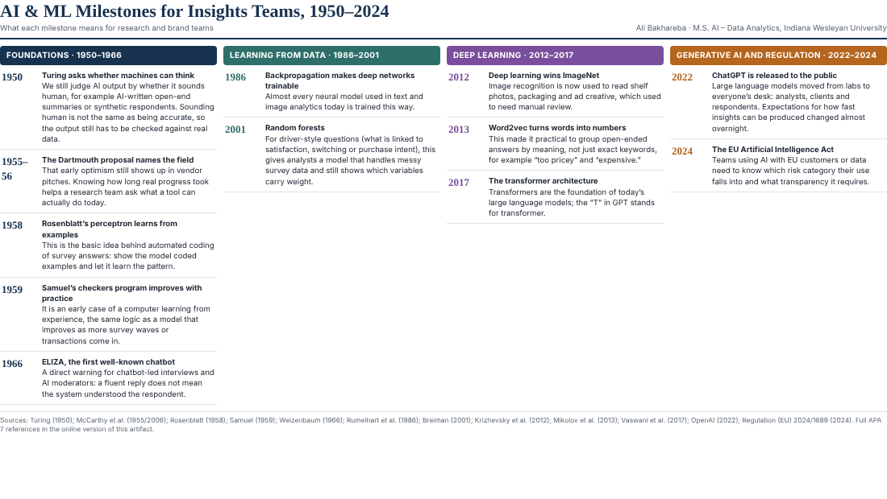

Market research and consumer insights professional · Graduate student, Indiana Wesleyan University
I started my career in Jeddah, Saudi Arabia, leading retail research for GfK. That job taught me how retail data is built from the ground up: store panels, channels, categories and the account teams who depend on the numbers. In 2019 I moved to Kantar, first in Saudi Arabia and then in Chicago, where I managed brand health and brand equity studies for large consumer, technology, finance and healthcare brands. My work covered the whole study cycle, from proposal and questionnaire design through fieldwork, analysis and the final presentation to senior stakeholders.
Over the last few years, AI has started to show up in almost every part of that cycle. At Kantar I took part in AI enablement work, including Copilot adoption and Promptathon activities. I enrolled in the M.S. in Artificial Intelligence – Data Analytics at Indiana Wesleyan University because I want to understand these methods well enough to judge them, not just use them.
My goal is a role where research expertise and AI meet: designing insight programs that use machine learning and generative AI where they help, and checking them where they might mislead. This portfolio collects the work I produce in the program, written for the people I expect to work with: insights managers, brand teams and analysts.
Each artifact below comes from my coursework and includes its title, objective, process, tools and value proposition, so readers can see how it was made and how they might use it.

Artifact 1 · AIML-500 Workshop 1A 12-milestone timeline that explains where today's AI research tools came from, with a "why it matters for research" note on every entry.
View artifactAdded as the course progresses.
Added as the course progresses.
Added as the course progresses.
I am happy to talk about research, analytics and practical uses of AI in insights work.